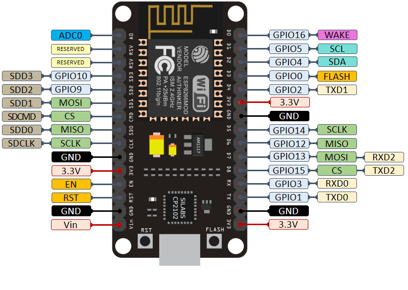
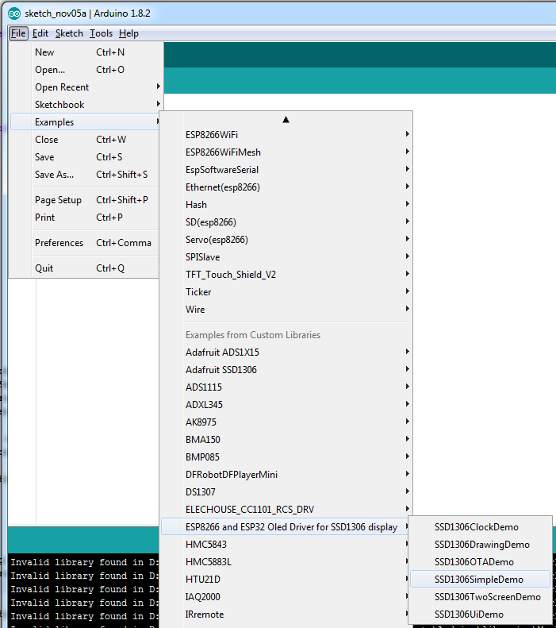

This is the last task.
It has 2 parts
I2C is a synchronous, multi-master, multi-slave, packet switched, single-ended, serial computer bus
invented in 1982 by Philips Semiconductor (now NXP Semiconductors).
It is widely used for attaching lower-speed peripheral ICs to processors and microcontrollers in short-distance
It uses only 2 lines - Serial Data Line (SDA) and Serial Clock Line (SCL)
In our device the 2 lines are D1-SDA and D2-SCL

The I2C device we have is an OLED screen, and we'll use it to create a display for the system we've created.
In order this screen with ESP8266, you should download "ESP8266 and ESP32 Oled Driver for SSD1306 display"
If you'd like to see what kind of things you can do with it - try loading an example sketch from:
File->Examples->ESP8266 and ESP32 Oled Driver for SSD1306 display->SSD1306SimpleDemo

Your task is to create a display for the device you created.
You can use whatever you want to construct it.
The following code shows an example function for an incomplete display:
void drawDisplay(void){
display.clear();
display.drawHorizontalLine(0, 0, 128);
display.drawHorizontalLine(0, 25, 128);
display.drawVerticalLine(0, 0, 25);
display.drawVerticalLine(68, 0, 25);
display.drawVerticalLine(127, 0, 25);
display.setTextAlignment(TEXT_ALIGN_LEFT);
display.drawString(20, 7, "16:20");
display.setTextAlignment(TEXT_ALIGN_RIGHT);
display.drawString(104, 7, String(30));
display.drawCircle(108, 10, 2);
display.drawString(55, 30, "TV");
// assume TV is on (fill circle)
display.fillCircle(60, 48, 4);
display.display();
}